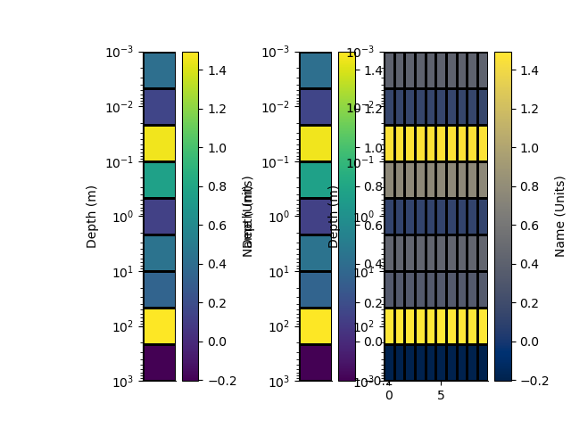
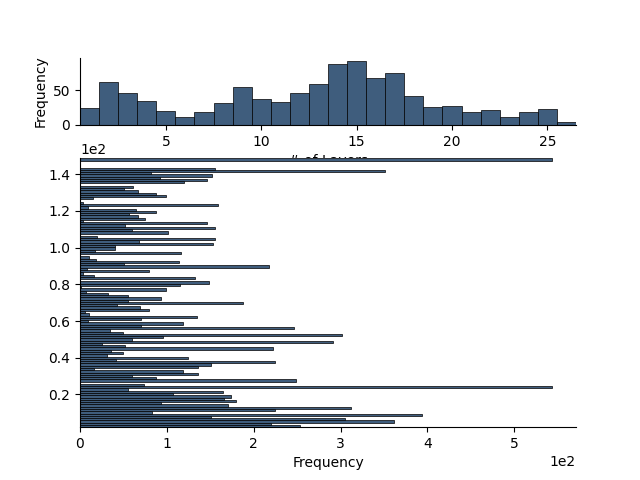

Note
Click here to download the full example code
1D Rectilinear Mesh
from geobipy import StatArray
from geobipy import RectilinearMesh1D
import matplotlib.pyplot as plt
import numpy as np
The basics
Instantiate a new 1D rectilinear mesh by specifying cell centres, edges, or widths.
x = StatArray(np.cumsum(np.arange(0.0, 10.0)), 'Depth', 'm')
Cell widths
rm = RectilinearMesh1D(widths=np.full(10, fill_value=50.0))
Cell centres
rm = RectilinearMesh1D(centres=x)
Cell edges
rm = RectilinearMesh1D(edges=x)
Cell centres
print(rm.centres)
Out:
[ 0.5 2. 4.5 ... 24.5 32. 40.5]
Cell edges
print(rm.edges)
Out:
[ 0. 1. 3. ... 28. 36. 45.]
Cell edges witout outermost edges
print(rm.internaledges)
Out:
[ 1. 3. 6. ... 21. 28. 36.]
Cell widths
print(rm.widths)
Out:
[1. 2. 3. ... 7. 8. 9.]
Get the cell indices
print(rm.cellIndex(np.r_[1.0, 5.0, 20.0]))
Out:
[1 2 5]
We can plot the grid of the mesh
plt.figure()
_ = rm.plotGrid(flip=True)
Or Pcolor the mesh showing. An array of cell values is used as the colour.
plt.figure()
arr = StatArray(np.random.randn(rm.nCells.value), "Name", "Units")
_ = rm.pcolor(arr, grid=True, flip=True)
Mask the mesh cells by a distance
rm_masked, indices, arr2 = rm.mask_cells(2.0, values=arr)
plt.figure()
_ = rm_masked.pcolor(StatArray(arr2), grid=True, flip=True)
Log-space rectilinear mesh
Instantiate a new 1D rectilinear mesh by specifying cell centres or edges. Here we use edges
x = StatArray(np.logspace(-3, 3, 10), 'Depth', 'm')
rm = RectilinearMesh1D(edges=x, log=10)
We can plot the grid of the mesh
plt.figure()
_ = rm.plotGrid(flip=True)
Or Pcolor the mesh showing. An array of cell values is used as the colour.
plt.figure()
arr = StatArray(np.random.randn(rm.nCells.value), "Name", "Units")
_ = rm.pcolor(arr, grid=True, flip=True)
# Writing and reading to/from HDF5
# ++++++++++++++++++++++++++++++++
import h5py
with h5py.File('rm1d.h5', 'w') as f:
rm.toHdf(f, 'rm1d')
with h5py.File('rm1d.h5', 'r') as f:
rm1 = RectilinearMesh1D.fromHdf(f['rm1d'])
# Making a mesh perturbable
# +++++++++++++++++++++++++
n_cells = 2
widths = StatArray(np.full(n_cells, fill_value=10.0), 'test')
rm = RectilinearMesh1D(widths=widths)
Randomness and Model Perturbations
We can set the priors on the 1D model by assigning minimum and maximum layer depths and a maximum number of layers. These are used to create priors on the number of cells in the model, a new depth interface, new parameter values and the vertical gradient of those parameters. The halfSpaceValue is used as a reference value for the parameter prior.
prng = np.random.RandomState()
# Set the priors
rm.set_priors(min_edge = 1.0,
max_edge = 150.0,
max_cells = 30,
prng = prng)
We can evaluate the prior of the model using depths only
print('Log probability of the Mesh given its priors: ', rm.priorProbability(log=True))
Out:
Log probability of the Mesh given its priors: -13.358381323561012
To propose new meshes, we specify the probabilities of creating, removing, perturbing, and not changing an edge interface Here we force the creation of a layer.
rm.set_proposals(probabilities = [0.25, 0.25, 0.25, 0.25], prng=prng)
rm.set_posteriors()
fig = plt.figure(figsize=(8,6))
ax = plt.subplot(121)
rm.plotGrid()
We can then perturb the layers of the model
for i in range(1000):
rm = rm.perturb()
rm.update_posteriors()
ax = plt.subplot(122)
rm.plotGrid()
import matplotlib.gridspec as gridspec
plt.figure()
gs = gridspec.GridSpec(1, 1, figure=fig)
ax = rm.init_posterior_plots(gs[0, 0])
rm.plot_posteriors(axes=ax)
import h5py
with h5py.File('rm1d.h5', 'w') as f:
rm.toHdf(f, 'rm1d', withPosterior = True)
with h5py.File('rm1d.h5', 'r') as f:
rm1 = RectilinearMesh1D.fromHdf(f['rm1d'])
plt.show()
- 
- 
Total running time of the script: ( 0 minutes 1.341 seconds)